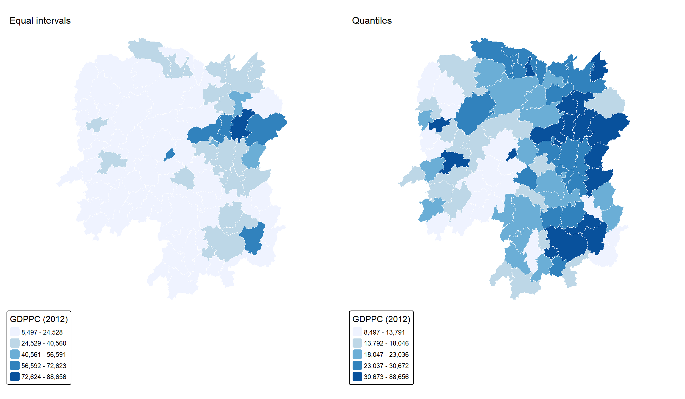
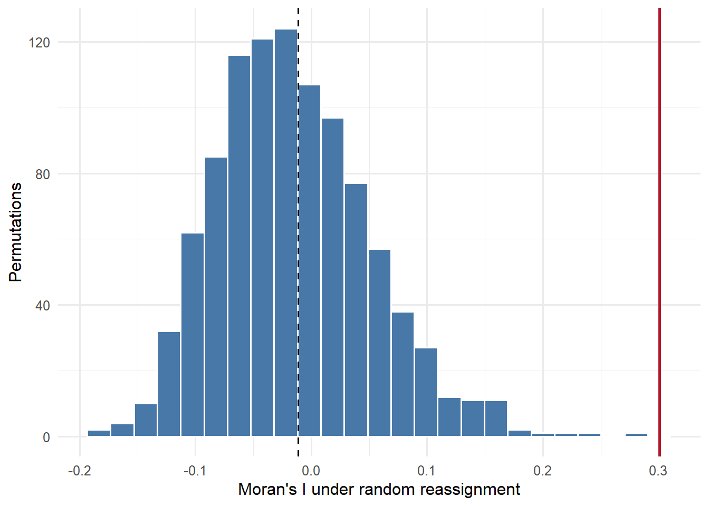
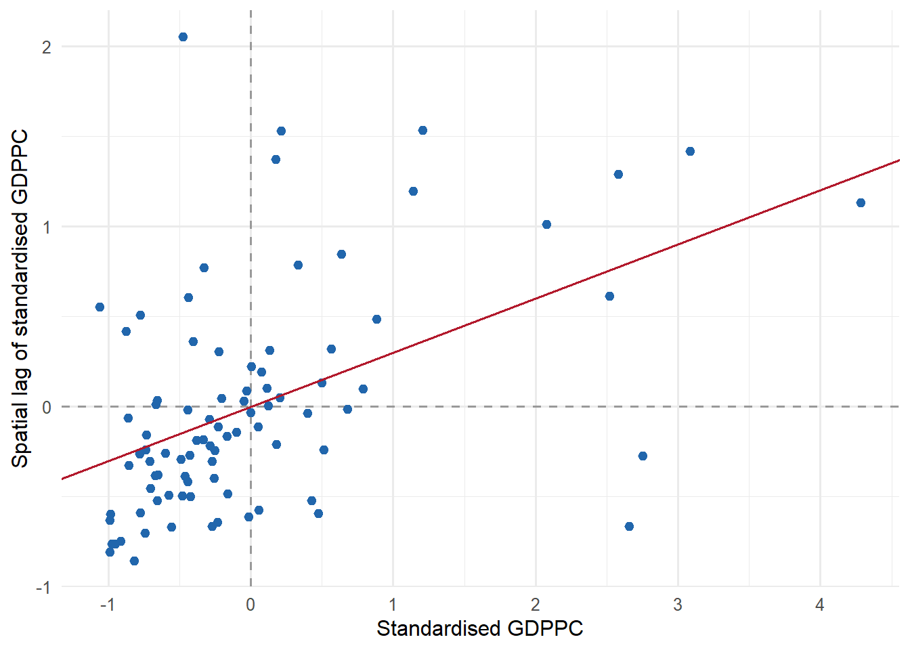
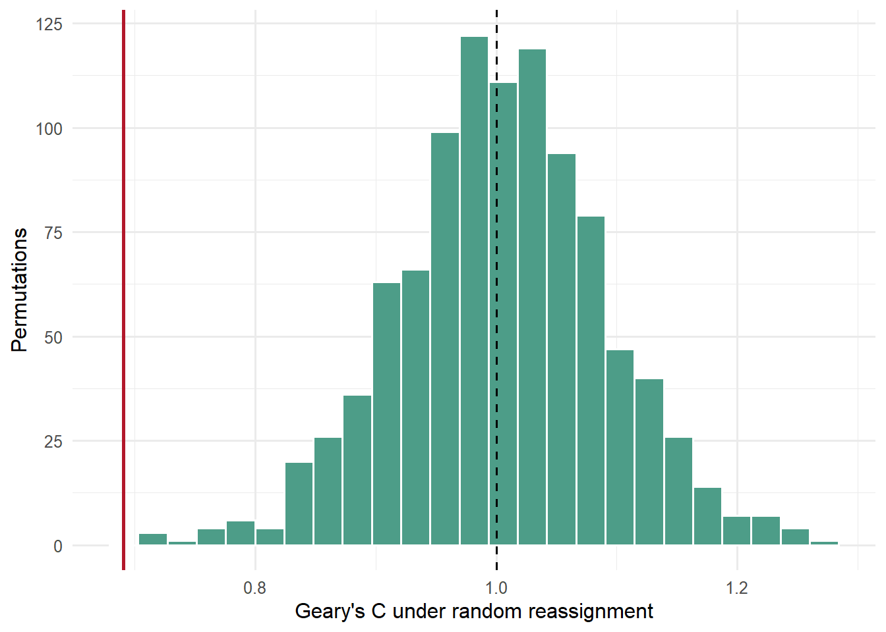
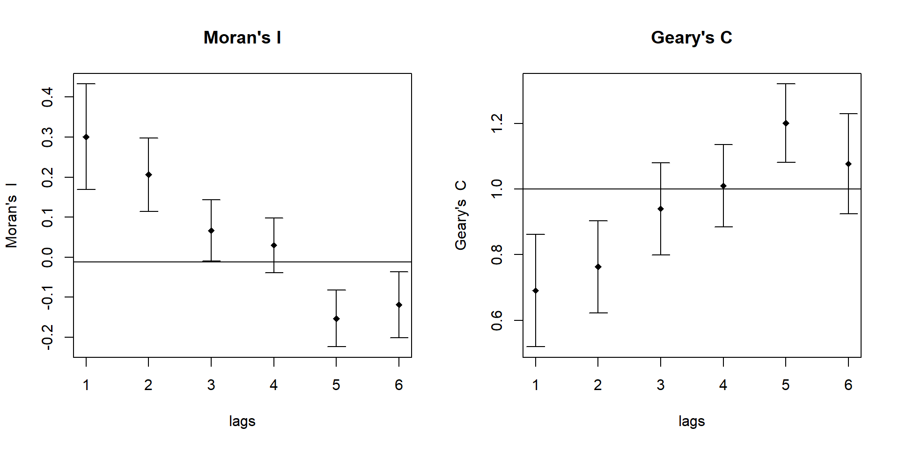

Show code
library(sf)
library(spdep)
library(tmap)
library(dplyr)
library(readr)
library(ggplot2)
library(knitr)
tmap_mode("plot")
theme_set(theme_minimal(base_size = 12))JUNCHEN LI
September 24, 2026
September 24, 2026
This exercise accompanies Chapter 9. The question is whether neighbouring Hunan counties have similar GDP per capita in 2012. The analysis treats county boundaries as fixed and tests the arrangement of an attribute, rather than the locations of point events. Part 2 examines individual counties.
Both parts use data/geospatial/Hunan.shp and its companion files, together with data/aspatial/Hunan_2012.csv. The data are downloaded from the instructor’s pinned course repository. data/download-data.R retrieves the inputs; data/download-manifest.txt records URLs, retrieval date and checksums. 2012 is the indicator year, not the download year. Values retain the supplied scale.
Install missing packages once in the R console before rendering. The document does not install software during a render.
An explicit county key prevents an accidental join on unrelated columns. The checks require a unique match for every polygon and retain polygon order for the weights.
boundary <- st_read("data/geospatial/Hunan.shp", quiet = TRUE)
attributes <- read_csv("data/aspatial/Hunan_2012.csv", show_col_types = FALSE)
stopifnot(nrow(boundary) == 88L, nrow(attributes) == 88L,
!anyDuplicated(boundary$County), !anyDuplicated(attributes$County),
setequal(boundary$County, attributes$County),
all(st_is_valid(boundary)), !any(st_is_empty(boundary)))
hunan <- left_join(boundary, select(attributes, County, GDPPC),
by = "County", relationship = "one-to-one")
stopifnot(identical(hunan$County, boundary$County),
all(is.finite(hunan$GDPPC)), all(hunan$GDPPC > 0))
data.frame(Counties = nrow(hunan), Missing_GDPPC = sum(is.na(hunan$GDPPC)),
Minimum = min(hunan$GDPPC), Median = median(hunan$GDPPC),
Maximum = max(hunan$GDPPC)) |> kable()| Counties | Missing_GDPPC | Minimum | Median | Maximum |
|---|---|---|---|---|
| 88 | 0 | 8497 | 20433 | 88656 |
indicator_map <- function(style, title) {
tm_shape(hunan) +
tm_polygons(fill = "GDPPC",
fill.scale = tm_scale_intervals(style = style, n = 5,
values = "brewer.blues"),
fill.legend = tm_legend(title = "GDPPC (2012)"),
col = "white", lwd = 0.4) +
tm_title(title, size = 1) +
tm_layout(frame = FALSE, legend.outside = TRUE)
}
tmap_arrange(indicator_map("equal", "Equal intervals"),
indicator_map("quantile", "Quantiles"), ncol = 2)
Equal intervals preserve equal numerical widths, while quantiles distribute counties more evenly among classes. A colour cluster depends partly on these choices. Neither map alone supplies a statistical test, and GDP per capita should not be interpreted as every resident’s income.
queen <- poly2nb(hunan, queen = TRUE, row.names = hunan$County)
weights <- nb2listw(queen, style = "W", zero.policy = FALSE)
stopifnot(all(card(queen) > 0),
max(abs(vapply(weights$weights, sum, numeric(1)) - 1)) < 1e-12)
data.frame(Counties = length(queen), Directed_links = sum(card(queen)),
Minimum_neighbours = min(card(queen)),
Maximum_neighbours = max(card(queen)),
Mean_neighbours = mean(card(queen))) |> kable(digits = 3)| Counties | Directed_links | Minimum_neighbours | Maximum_neighbours | Mean_neighbours |
|---|---|---|---|---|
| 88 | 448 | 1 | 11 | 5.091 |
There are 448 directed links. A shared boundary point is sufficient for queen adjacency. Row standardisation gives each county a weighted neighbour average; it does not correct for omitted counties outside the province. Changing the neighbour definition changes the question being tested.
The null randomly assigns the observed GDPPC values to the fixed counties. The one-sided alternative tests positive spatial association. Exchangeability is an assumption, not proof that economic development is generated randomly.
Moran I test under randomisation
data: hunan$GDPPC
weights: weights
Moran I statistic standard deviate = 4.7351, p-value = 1.095e-06
alternative hypothesis: greater
sample estimates:
Moran I statistic Expectation Variance
0.300749970 -0.011494253 0.004348351 The observed I is 0.3007, compared with the randomisation expectation -0.0115. The analytical p-value is 1.09e-06. A positive value indicates a province-wide tendency for similar values to be adjacent; it does not locate individual clusters or identify a cause.
Monte-Carlo simulation of Moran I
data: hunan$GDPPC
weights: weights
number of simulations + 1: 1000
statistic = 0.30075, observed rank = 1000, p-value = 0.001
alternative hypothesis: greaterggplot(data.frame(I = moran_sim$res[seq_len(999)]), aes(I)) +
geom_histogram(bins = 25, fill = "#4878a8", colour = "white") +
geom_vline(xintercept = unname(moran_sim$statistic), colour = "#b2182b", linewidth = 1) +
geom_vline(xintercept = -1/87, linetype = "dashed") +
labs(x = "Moran's I under random reassignment", y = "Permutations")
The simulated reference contains only the 999 reassigned datasets; the observed value is excluded from the histogram. The permutation p-value is 0.001. With 999 permutations, tail probabilities have limited resolution. This test and the analytical test use the same data and weights, so agreement is not independent replication.
z <- as.numeric(scale(hunan$GDPPC))
wz <- lag.listw(weights, z)
slope <- unname(coef(lm(wz ~ 0 + z))[1])
stopifnot(abs(slope - unname(moran_result$estimate[1])) < 1e-10)
ggplot(data.frame(z, wz), aes(z, wz)) +
geom_hline(yintercept = 0, linetype = "dashed", colour = "grey60") +
geom_vline(xintercept = 0, linetype = "dashed", colour = "grey60") +
geom_point(colour = "#2166ac", size = 2) +
geom_abline(intercept = 0, slope = slope, colour = "#b2182b") +
labs(x = "Standardised GDPPC", y = "Spatial lag of standardised GDPPC")
The line through the origin has slope I because the weights sum to the number of counties. The lag is computed after standardising GDPPC; independently standardising the lag would change this slope relationship. Quadrants describe relative values, not local significance.
Geary C test under randomisation
data: hunan$GDPPC
weights: weights
Geary C statistic standard deviate = 3.6108, p-value = 0.0001526
alternative hypothesis: Expectation greater than statistic
sample estimates:
Geary C statistic Expectation Variance
0.6907223 1.0000000 0.0073364
Monte-Carlo simulation of Geary C
data: hunan$GDPPC
weights: weights
number of simulations + 1: 1000
statistic = 0.69072, observed rank = 1, p-value = 0.001
alternative hypothesis: greaterGeary’s C uses squared differences between neighbours. Its null reference is one; smaller values indicate positive association. Here C is 0.6907 with permutation p = 0.001. In these spdep functions, alternative = "greater" means greater positive autocorrelation, corresponding to the lower tail of C.
ggplot(data.frame(C = geary_sim$res[seq_len(999)]), aes(C)) +
geom_histogram(bins = 25, fill = "#4d9d88", colour = "white") +
geom_vline(xintercept = unname(geary_sim$statistic), colour = "#b2182b", linewidth = 1) +
geom_vline(xintercept = 1, linetype = "dashed") +
labs(x = "Geary's C under random reassignment", y = "Permutations")
A lag here is a step in the county neighbour graph, not a kilometre distance or a time interval. Higher-order neighbours are defined by their shortest graph path.
Spatial correlogram for hunan$GDPPC
method: Moran's I
estimate expectation variance standard deviate Pr(I) two sided
1 (88) 0.3007500 -0.0114943 0.0043484 4.7351 1.217e-05 ***
2 (88) 0.2060084 -0.0114943 0.0020962 4.7505 1.217e-05 ***
3 (88) 0.0668273 -0.0114943 0.0014602 2.0496 0.0808001 .
4 (88) 0.0299470 -0.0114943 0.0011717 1.2107 0.2260150
5 (88) -0.1530471 -0.0114943 0.0012440 -4.0134 0.0002394 ***
6 (88) -0.1187070 -0.0114943 0.0016791 -2.6164 0.0266570 *
---
Signif. codes: 0 '***' 0.001 '**' 0.01 '*' 0.05 '.' 0.1 ' ' 1Spatial correlogram for hunan$GDPPC
method: Geary's C
estimate expectation variance standard deviate Pr(I) two sided
1 (88) 0.6907223 1.0000000 0.0073364 -3.6108 0.001831 **
2 (88) 0.7630197 1.0000000 0.0049126 -3.3811 0.003610 **
3 (88) 0.9397299 1.0000000 0.0049005 -0.8610 0.930122
4 (88) 1.0098462 1.0000000 0.0039631 0.1564 0.930122
5 (88) 1.2008204 1.0000000 0.0035568 3.3673 0.003610 **
6 (88) 1.0773386 1.0000000 0.0058042 1.0151 0.930122
---
Signif. codes: 0 '***' 0.001 '**' 0.01 '*' 0.05 '.' 0.1 ' ' 1
Read the estimates together with the printed tests. Holm adjustment is applied separately to the six lags for each statistic; it is an exploratory check, not a correction for every decision in this exercise. Associations at wider graph lags can differ from immediate-neighbour association. The plot’s uncertainty bars are not simultaneous confidence bands.
The main queen-weight tests give I = 0.301 and C = 0.691, both consistent with positive spatial association in this dataset. The result describes relative county GDPPC patterns in 2012, not changes through time. The analysis cannot establish spillover effects, causal mechanisms or local significance. County aggregation, unusually large indicator values and the province boundary can affect the summaries. Local analysis follows in Exercise 5(2).
R version 4.5.3 (2026-03-11 ucrt)
Platform: x86_64-w64-mingw32/x64
Running under: Windows 11 x64 (build 26200)
Matrix products: default
LAPACK version 3.12.1
locale:
[1] LC_COLLATE=English_United States.utf8
[2] LC_CTYPE=English_United States.utf8
[3] LC_MONETARY=English_United States.utf8
[4] LC_NUMERIC=C
[5] LC_TIME=English_United States.utf8
time zone: Asia/Singapore
tzcode source: internal
attached base packages:
[1] stats graphics grDevices utils datasets methods base
other attached packages:
[1] knitr_1.51 ggplot2_4.0.3 readr_2.2.0 dplyr_1.2.1 tmap_4.4
[6] spdep_1.4-2 spData_2.3.5 sf_1.1-0
loaded via a namespace (and not attached):
[1] tidyselect_1.2.1 farver_2.1.2 S7_0.2.2
[4] fastmap_1.2.0 leaflegend_1.2.8 leaflet_2.2.3
[7] TH.data_1.1-5 XML_3.99-0.23 digest_0.6.39
[10] lifecycle_1.0.5 LearnBayes_2.15.2 survival_3.8-6
[13] terra_1.9-27 magrittr_2.0.5 compiler_4.5.3
[16] rlang_1.2.0 tools_4.5.3 igraph_2.3.1
[19] yaml_2.3.12 data.table_1.18.2.1 labeling_0.4.3
[22] htmlwidgets_1.6.4 bit_4.6.0 sp_2.2-1
[25] classInt_0.4-11 RColorBrewer_1.1-3 multcomp_1.4-32
[28] abind_1.4-8 KernSmooth_2.23-26 withr_3.0.2
[31] leafsync_0.1.0 grid_4.5.3 cols4all_0.10
[34] e1071_1.7-17 leafem_0.2.5 colorspace_2.1-2
[37] spacesXYZ_1.6-0 MASS_7.3-65 scales_1.4.0
[40] mvtnorm_1.3-7 cli_3.6.6 rmarkdown_2.31
[43] crayon_1.5.3 generics_0.1.4 otel_0.2.0
[46] tzdb_0.5.0 tmaptools_3.3 DBI_1.3.0
[49] proxy_0.4-29 splines_4.5.3 spatialreg_1.4-3
[52] stars_0.7-2 parallel_4.5.3 s2_1.1.9
[55] marginaleffects_1.0.0 base64enc_0.1-6 vctrs_0.7.3
[58] sandwich_3.1-3 boot_1.3-32 Matrix_1.7-4
[61] jsonlite_2.0.0 hms_1.1.4 bit64_4.8.0
[64] crosstalk_1.2.2 units_1.0-1 maptiles_0.11.0
[67] glue_1.8.1 lwgeom_0.2-16 codetools_0.2-20
[70] gtable_0.3.6 deldir_2.0-4 raster_3.6-32
[73] tibble_3.3.1 logger_0.4.2 pillar_1.11.1
[76] htmltools_0.5.9 R6_2.6.1 wk_0.9.5
[79] microbenchmark_1.5.0 vroom_1.7.1 evaluate_1.0.5
[82] lattice_0.22-9 backports_1.5.1 png_0.1-9
[85] class_7.3-23 Rcpp_1.1.1-1.1 nlme_3.1-168
[88] coda_0.19-4.1 xfun_0.57 zoo_1.8-15
[91] pkgconfig_2.0.3 ---
title: "Hands-on Exercise 5(1): Global Spatial Autocorrelation"
author: "JUNCHEN LI"
date: "September 24, 2026"
date-modified: "last-modified"
format:
html:
toc: true
toc-depth: 3
code-fold: true
code-summary: "Show code"
code-tools: true
editor: source
execute:
echo: true
warning: false
message: false
freeze: auto
---
# Overview
This exercise accompanies [Chapter 9](https://r4gdsa.netlify.app/chap09.html). The question is whether neighbouring Hunan counties have similar GDP per capita in 2012. The analysis treats county boundaries as fixed and tests the arrangement of an attribute, rather than the locations of point events. [Part 2](Hands-on_Ex0502.qmd) examines individual counties.
# 1 Data and preparation
Both parts use `data/geospatial/Hunan.shp` and its companion files, together with `data/aspatial/Hunan_2012.csv`. The data are downloaded from the instructor's [pinned course repository](https://github.com/tskam/ISSS626-AY2026-27Aug/tree/966eea6df498b38f10bc209d07a922f4d87b95d9/lesson/Lesson04/data). `data/download-data.R` retrieves the inputs; `data/download-manifest.txt` records URLs, retrieval date and checksums. **2012 is the indicator year**, not the download year. Values retain the supplied scale.
## Packages
Install missing packages once in the R console before rendering. The document does not install software during a render.
```{r}
#| label: setup
library(sf)
library(spdep)
library(tmap)
library(dplyr)
library(readr)
library(ggplot2)
library(knitr)
tmap_mode("plot")
theme_set(theme_minimal(base_size = 12))
```
## Import and join
An explicit county key prevents an accidental join on unrelated columns. The checks require a unique match for every polygon and retain polygon order for the weights.
```{r}
#| label: import-data
boundary <- st_read("data/geospatial/Hunan.shp", quiet = TRUE)
attributes <- read_csv("data/aspatial/Hunan_2012.csv", show_col_types = FALSE)
stopifnot(nrow(boundary) == 88L, nrow(attributes) == 88L,
!anyDuplicated(boundary$County), !anyDuplicated(attributes$County),
setequal(boundary$County, attributes$County),
all(st_is_valid(boundary)), !any(st_is_empty(boundary)))
hunan <- left_join(boundary, select(attributes, County, GDPPC),
by = "County", relationship = "one-to-one")
stopifnot(identical(hunan$County, boundary$County),
all(is.finite(hunan$GDPPC)), all(hunan$GDPPC > 0))
data.frame(Counties = nrow(hunan), Missing_GDPPC = sum(is.na(hunan$GDPPC)),
Minimum = min(hunan$GDPPC), Median = median(hunan$GDPPC),
Maximum = max(hunan$GDPPC)) |> kable()
```
# 2 Two views of the same attribute
```{r}
#| label: fig-classification
#| fig-width: 12
#| fig-height: 7
#| fig-cap: "Equal-interval and quantile classifications of Hunan GDPPC, 2012."
indicator_map <- function(style, title) {
tm_shape(hunan) +
tm_polygons(fill = "GDPPC",
fill.scale = tm_scale_intervals(style = style, n = 5,
values = "brewer.blues"),
fill.legend = tm_legend(title = "GDPPC (2012)"),
col = "white", lwd = 0.4) +
tm_title(title, size = 1) +
tm_layout(frame = FALSE, legend.outside = TRUE)
}
tmap_arrange(indicator_map("equal", "Equal intervals"),
indicator_map("quantile", "Quantiles"), ncol = 2)
```
Equal intervals preserve equal numerical widths, while quantiles distribute counties more evenly among classes. A colour cluster depends partly on these choices. Neither map alone supplies a statistical test, and GDP per capita should not be interpreted as every resident's income.
# 3 Queen neighbours and spatial weights
```{r}
#| label: queen-weights
queen <- poly2nb(hunan, queen = TRUE, row.names = hunan$County)
weights <- nb2listw(queen, style = "W", zero.policy = FALSE)
stopifnot(all(card(queen) > 0),
max(abs(vapply(weights$weights, sum, numeric(1)) - 1)) < 1e-12)
data.frame(Counties = length(queen), Directed_links = sum(card(queen)),
Minimum_neighbours = min(card(queen)),
Maximum_neighbours = max(card(queen)),
Mean_neighbours = mean(card(queen))) |> kable(digits = 3)
```
There are **`r sum(card(queen))` directed links**. A shared boundary point is sufficient for queen adjacency. Row standardisation gives each county a weighted neighbour average; it does not correct for omitted counties outside the province. Changing the neighbour definition changes the question being tested.
# 4 Global Moran's I
## Analytical test
The null randomly assigns the observed GDPPC values to the fixed counties. The one-sided alternative tests positive spatial association. Exchangeability is an assumption, not proof that economic development is generated randomly.
```{r}
#| label: moran-test
moran_result <- moran.test(hunan$GDPPC, weights,
alternative = "greater", randomisation = TRUE)
moran_result
```
The observed I is **`r round(unname(moran_result$estimate[1]), 4)`**, compared with the randomisation expectation **`r round(-1/(nrow(hunan)-1), 4)`**. The analytical p-value is **`r format.pval(moran_result$p.value, digits = 3)`**. A positive value indicates a province-wide tendency for similar values to be adjacent; it does not locate individual clusters or identify a cause.
## Monte Carlo test
```{r}
#| label: moran-permutation
set.seed(1234)
moran_sim <- moran.mc(hunan$GDPPC, weights, nsim = 999,
alternative = "greater")
moran_sim
```
```{r}
#| label: fig-moran-null
#| fig-cap: "Permutation distribution of Moran's I; the red line marks the observed statistic."
ggplot(data.frame(I = moran_sim$res[seq_len(999)]), aes(I)) +
geom_histogram(bins = 25, fill = "#4878a8", colour = "white") +
geom_vline(xintercept = unname(moran_sim$statistic), colour = "#b2182b", linewidth = 1) +
geom_vline(xintercept = -1/87, linetype = "dashed") +
labs(x = "Moran's I under random reassignment", y = "Permutations")
```
The simulated reference contains only the 999 reassigned datasets; the observed value is excluded from the histogram. The permutation p-value is **`r moran_sim$p.value`**. With 999 permutations, tail probabilities have limited resolution. This test and the analytical test use the same data and weights, so agreement is not independent replication.
## Moran scatterplot
```{r}
#| label: fig-moran-scatter
#| fig-cap: "Standardised GDPPC and its spatial lag using row-standardised queen weights."
z <- as.numeric(scale(hunan$GDPPC))
wz <- lag.listw(weights, z)
slope <- unname(coef(lm(wz ~ 0 + z))[1])
stopifnot(abs(slope - unname(moran_result$estimate[1])) < 1e-10)
ggplot(data.frame(z, wz), aes(z, wz)) +
geom_hline(yintercept = 0, linetype = "dashed", colour = "grey60") +
geom_vline(xintercept = 0, linetype = "dashed", colour = "grey60") +
geom_point(colour = "#2166ac", size = 2) +
geom_abline(intercept = 0, slope = slope, colour = "#b2182b") +
labs(x = "Standardised GDPPC", y = "Spatial lag of standardised GDPPC")
```
The line through the origin has slope I because the weights sum to the number of counties. The lag is computed **after** standardising GDPPC; independently standardising the lag would change this slope relationship. Quadrants describe relative values, not local significance.
# 5 Geary's C
```{r}
#| label: geary-tests
geary_result <- geary.test(hunan$GDPPC, weights,
alternative = "greater", randomisation = TRUE)
set.seed(1234)
geary_sim <- geary.mc(hunan$GDPPC, weights, nsim = 999,
alternative = "greater")
geary_result
geary_sim
```
Geary's C uses squared differences between neighbours. Its null reference is one; smaller values indicate positive association. Here C is **`r round(unname(geary_result$estimate[1]), 4)`** with permutation p = **`r geary_sim$p.value`**. In these spdep functions, `alternative = "greater"` means greater positive autocorrelation, corresponding to the **lower** tail of C.
```{r}
#| label: fig-geary-null
#| fig-cap: "Permutation distribution of Geary's C; the observed value is red and the null reference of one is dashed."
ggplot(data.frame(C = geary_sim$res[seq_len(999)]), aes(C)) +
geom_histogram(bins = 25, fill = "#4d9d88", colour = "white") +
geom_vline(xintercept = unname(geary_sim$statistic), colour = "#b2182b", linewidth = 1) +
geom_vline(xintercept = 1, linetype = "dashed") +
labs(x = "Geary's C under random reassignment", y = "Permutations")
```
# 6 Spatial correlograms
A lag here is a step in the county neighbour graph, not a kilometre distance or a time interval. Higher-order neighbours are defined by their shortest graph path.
```{r}
#| label: correlograms
mi_corr <- sp.correlogram(queen, hunan$GDPPC, order = 6,
method = "I", style = "W", zero.policy = TRUE)
gc_corr <- sp.correlogram(queen, hunan$GDPPC, order = 6,
method = "C", style = "W", zero.policy = TRUE)
print(mi_corr, p.adj.method = "holm")
print(gc_corr, p.adj.method = "holm")
```
```{r}
#| label: fig-correlograms
#| fig-width: 10
#| fig-height: 5
#| fig-cap: "Moran and Geary summaries across six graph lags."
par(mfrow = c(1, 2))
plot(mi_corr, main = "Moran's I")
plot(gc_corr, main = "Geary's C")
par(mfrow = c(1, 1))
```
Read the estimates together with the printed tests. Holm adjustment is applied separately to the six lags for each statistic; it is an exploratory check, not a correction for every decision in this exercise. Associations at wider graph lags can differ from immediate-neighbour association. The plot's uncertainty bars are not simultaneous confidence bands.
# 7 Interpretation and limitations
The main queen-weight tests give I = **`r round(unname(moran_sim$statistic), 3)`** and C = **`r round(unname(geary_sim$statistic), 3)`**, both consistent with positive spatial association in this dataset. The result describes relative county GDPPC patterns in **2012**, not changes through time. The analysis cannot establish spillover effects, causal mechanisms or local significance. County aggregation, unusually large indicator values and the province boundary can affect the summaries. Local analysis follows in [Exercise 5(2)](Hands-on_Ex0502.qmd).
# References and session information
- [Chapter 9: Global Measures of Spatial Autocorrelation](https://r4gdsa.netlify.app/chap09.html).
- [spdep: Moran's I](https://r-spatial.github.io/spdep/reference/moran.test.html), [Geary's C](https://r-spatial.github.io/spdep/reference/geary.test.html), and [correlograms](https://r-spatial.github.io/spdep/reference/sp.correlogram.html).
```{r}
#| label: session-info
sessionInfo()
```